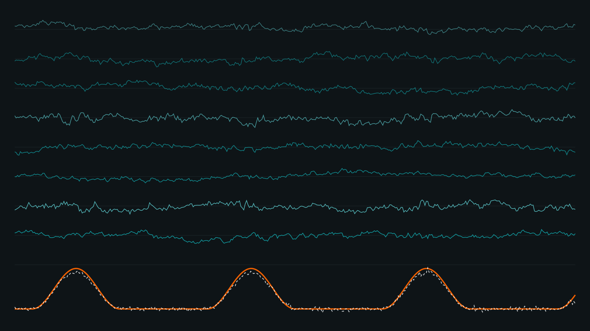
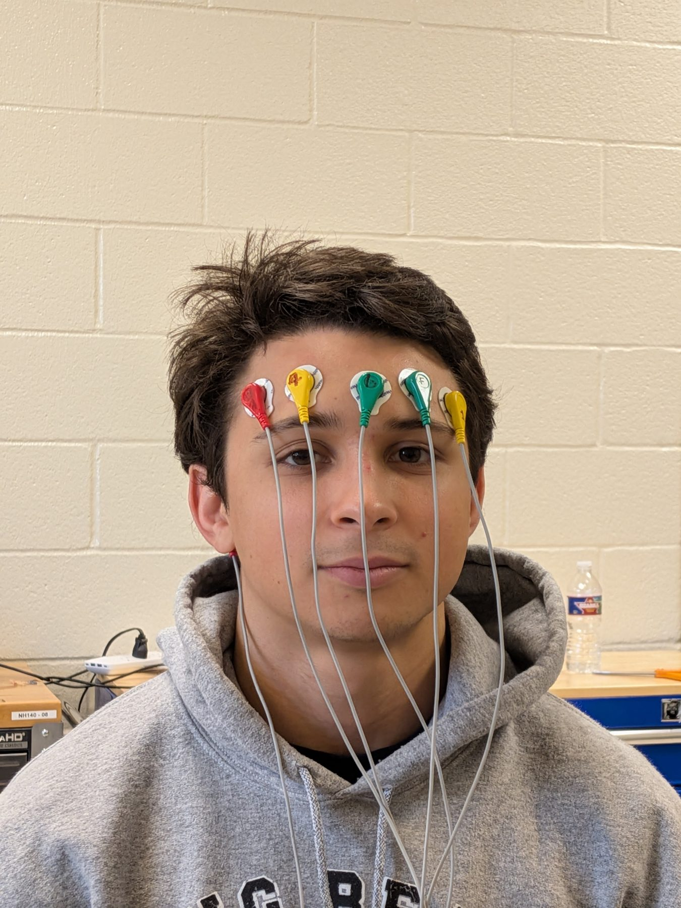
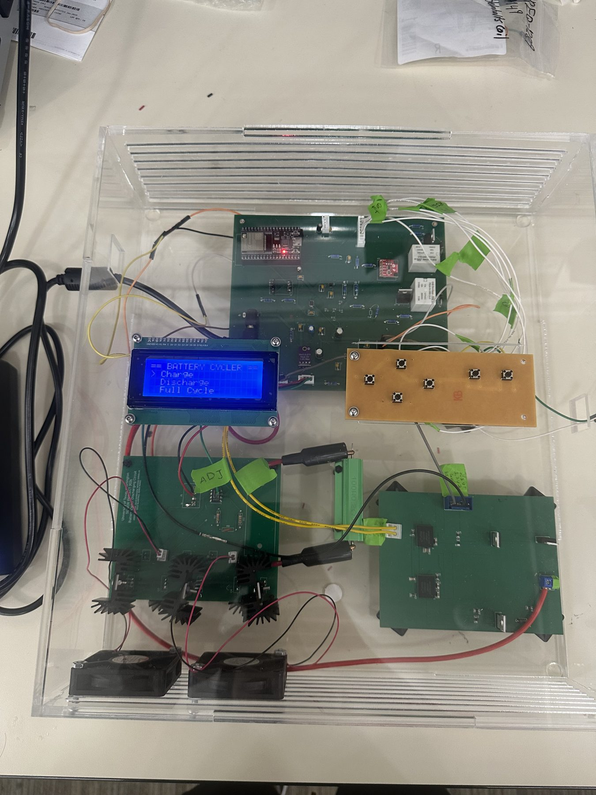
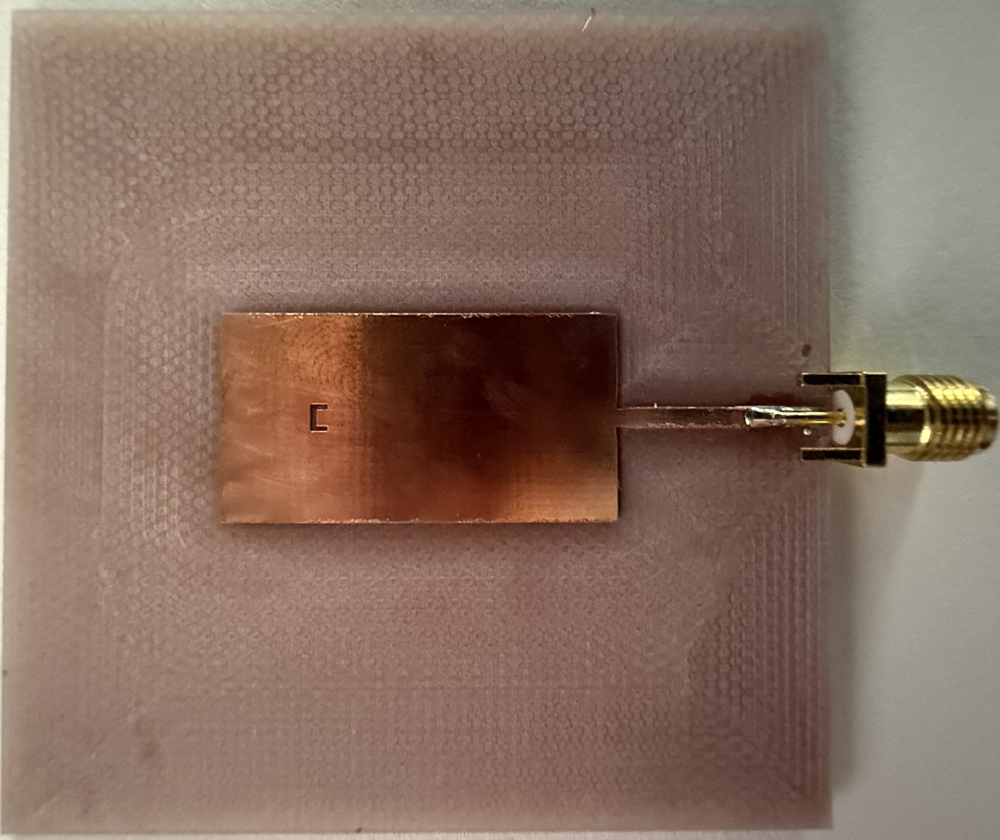
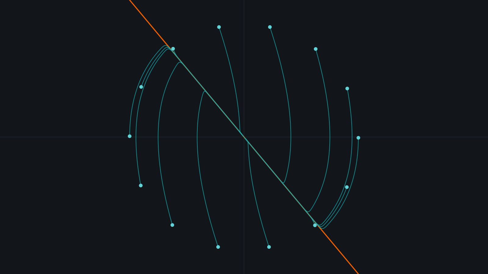
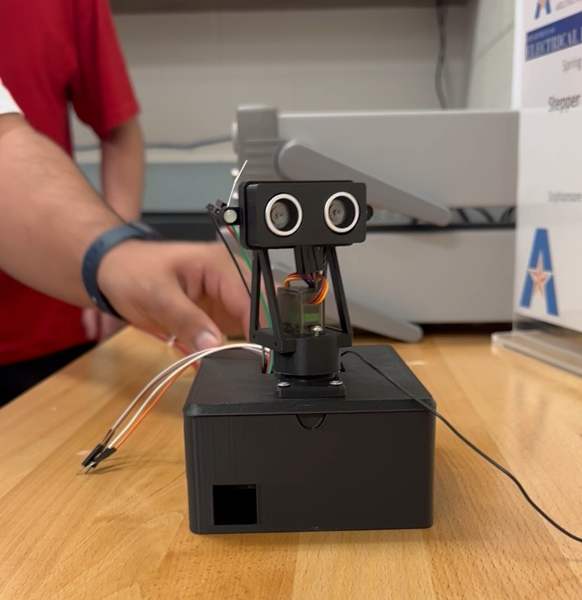
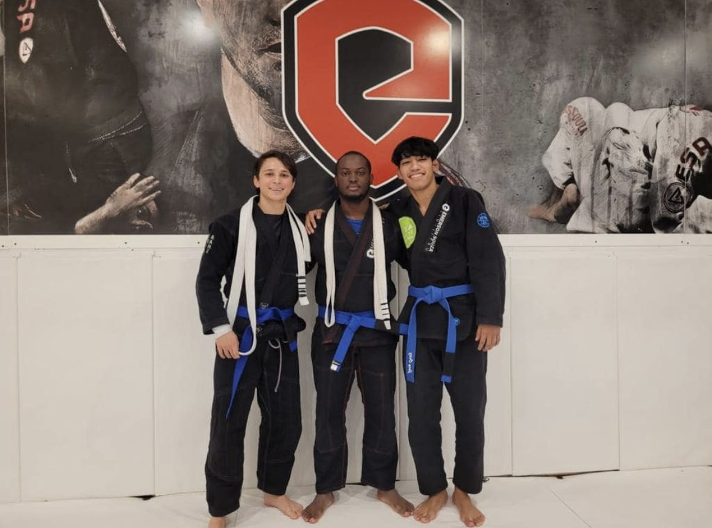
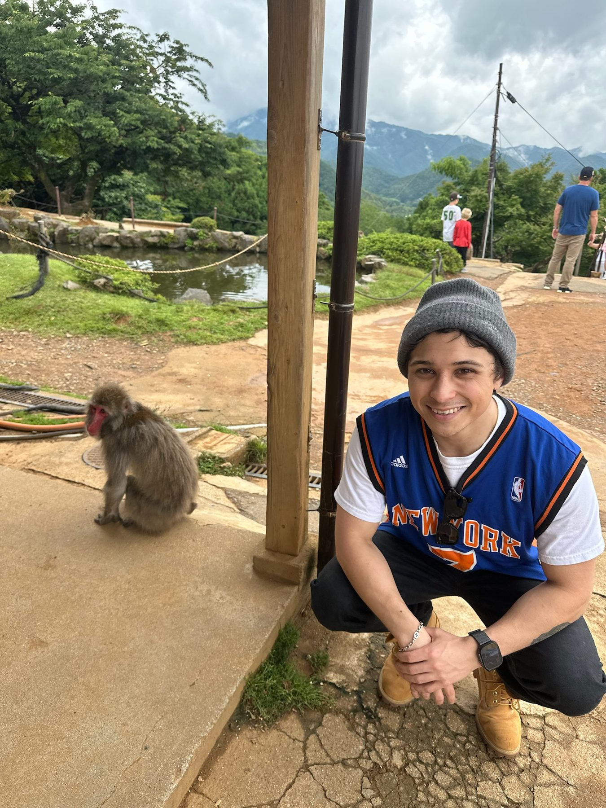
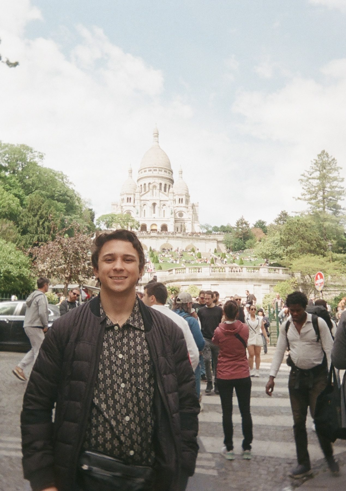

// hi, I'm Kyle · M.S. EE @ Columbia · New York
M.S. student in Electrical Engineering at Columbia University, building brain-computer interfaces end to end: circuits that capture microvolt signals, firmware that streams them, and decoders that turn them into movement in under 35 ms.
01 · about me
I'm an M.S. Electrical Engineering student at Columbia University focused on brain-computer interfaces. My work runs from the electrode to the edge. I build low-noise biosignal front ends, design causal neural decoders, and deploy them on embedded hardware with verified real-time latency. I also bring experience from medical devices, where I ran V&V and 510(k) testing on Class II surgical systems.
I'm looking for roles in BCI engineering, neural interface hardware, neuromodulation, and medical device R&D. The best way to reach me is email.
These are the skills I use most across research, hardware, and industry work.
02 · lab notebook
Research and design projects from neural decoding to RF. Click any project for the full write-up.

exp. 01A 12.6k-parameter causal network decodes finger movement from brain signals in under 35 ms on a low-cost ARM board.
read the write-up
exp. 02Led a four-person team building an ADS1299 + ESP32 EEG system that streams over Bluetooth.
read the write-up
exp. 03A 120 V bench instrument with 5 A CC/CV charging, an active-load discharger, and battery health analytics.
open
exp. 04Designed in HFSS for 2.45 and 5 GHz, then milled and measured. Resonances landed within 2% of simulation.
open
exp. 05Modeled a two-link arm and built six controllers, ending with sliding-mode control that tracks despite 20% mass error.
open
exp. 06My first PCB: a rotating ultrasonic scanner that sweeps 180° and stops when something gets close.
open03 · signal path
Research, industry, and education. Each role links to a longer page.
↓ scroll and watch the signal jump node to node (saltatory conduction!)
Apr 2026 – Present
Lead Student Researcher
I run an independent first-author study on causal, quantized ECoG decoding deployed to embedded hardware. The manuscript is in preparation for IEEE EMBC / NER.
read more →Jan – May 2026
Research Assistant, Rehabilitation Robotics
I built the firmware, closed-loop controller and control app for a soft pneumatic hand exoskeleton used in neurorehabilitation, holding finger-angle error under 5°.
read more →May – Aug 2026
Asset Management Intern
I built a SQL-based asset tracking system and a statistical risk score that ranks distribution assets for inspection and replacement.
read more →May – Aug 2025
Distribution Design Intern
I designed overhead and underground distribution circuits and delivered field-ready construction packages for Oncor projects.
read more →2020 – 2022
R&D / Product Development Engineering Intern
I ran V&V and 510(k) testing on Class II ultrasonic surgical devices, engineered a BoneScalpel tube set, and wrote the company's first sterile-field IFU.
read more →Aug 2026 – Dec 2027 (expected)
M.S. Electrical Engineering, focused on neuroengineering
Current coursework, Fall 2026:
Aug 2024 – Aug 2026
B.S. Electrical Engineering, Magna Cum Laude · GPA 3.73 / 4.0 · Dean's List · President's List
I took graduate coursework in Robotics and Cyber-Physical Systems alongside the core EE sequence. Relevant coursework:
Jan 2025
Google · Coursera
Six courses covering project initiation, planning, execution, and Agile project management, finishing with a capstone that applies them to a real-world project.
view certificate → verify →04 · readouts
05 · beyond the lab

On the mats most weeks. It's problem solving under pressure, with instant feedback.

From the Swiss Alps to Japan's snow monkeys, I love seeing how other places live and build.

I love diving into history to understand how our world came to be. Currently obsessed with Late Antiquity and the development of modern Europe states.
06 · form a synapse
Whether it's a role, a research collaboration, or a question about my work, reach out.
New York, NY